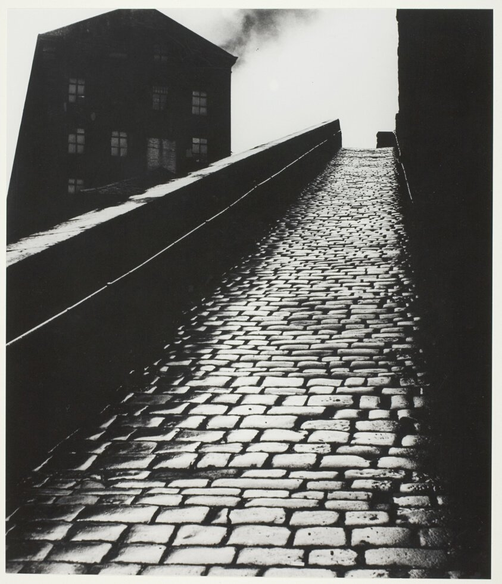

A Snicket in Halifax
Bill Brandt · 1937 · Gelatin silver print · 33.2 × 28.6 cm (image/paper) · Art Institute of Chicago
In copyright. Look and learn: shown for study, not for download.
Bill Brandt was born in Hamburg and moved to London in 1933. After the Jarrow March of 1936 he travelled north to photograph what the depression had done to industrial England, first the miners of Northumberland and then the streets of Halifax in West Yorkshire. He later called Halifax a real dream town and said he had never seen anything like it. He signed the mount of this print in black ink.